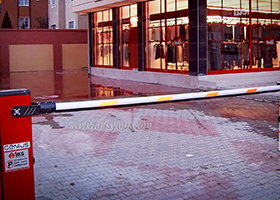
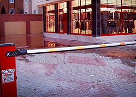

haberler ve duyurular haberler ve duyurular haberler ve duyurular
haberler ve duyurular haberler ve duyurular haberler ve duyurular
haberler ve duyurular haberler ve duyurular haberler ve duyurular
Özellikle iş yeri, mağaza ve dükkanların güvenliğini sağlamak amacıyla kullanılan kepenk sistemleri günümüzde estetik amaçlı da kullanılabilmektedir. Farklı mimari detaylarla uyumlu olarak kullanılan kepenkler motorlu ve uzaktan kumandalı olabilmekte ve kullanıcılara kolaylık sağlamaktadır. Kepenk mini pencereli modeli ile güvenlik görevini yaparken vitrininiz de rahatlıkla izlenebilmektedir.
Kepenk sistemleri uygulanacak alana uygun olarak farklı yükseklik ve şekle sahip kepenk profilleri kullanılarak hem güvenlik hem de estetik ön planda tutularak çağdaş çözümler üretilebilir. İçi poliüretan dolgulu alüminyum panellerin yanı sıra endüstriyel tip, içi boş, ekztrüzyon profiller ve galvaniz profiller de kullanılabilir.

Kollu bariyerler özellikle toplu konut, otopark, endistriyel tesis girişleri ve buna benzer birçok alanın girişleri için kullanılan bir bariyerdir. Farklı uygulamalarınıza birden fazla çeşidiyle cevap verebilen bu ürünler kolay montajlanabilme özelliğine sahiptir. Ürünler 2-8 saniye arasında açılabilmektedir ve kişisel anahtar siste mi de mevcuttur. Ayrıca üretilen bu ürünler termal koruma özelliğine de sahiptir.

Hem endüstriyel hem de konut tipi mekânlara hitap edebilen fotoselli kapı mekanizması görsellikle bütünleştirilerek üretilmiştir. Kaliteli üretimiyle uzun yıllar kullanabileceğiniz bu fotoselli kapılar evlerinizin ve iş yerlerinizin kullanımında sizlere sağlamlığının yanında estetik bir görünümü de kazandıracak. Ürünü diğer firmaların ürünleriyle kıyaslayarak en kolay şekilde kalitesini anlayabilirsiniz. Mekânlarınızın farkını bu ürünler ile ortaya çıkarabilirsiniz.

Genelde güvenlik ve kullanım kolaylığı sebebiyle tercih edilen kapılardır. Uygulanan otomasyondaki uzaktan kumanda sistemi sayesinde kullanıcılar, bahçe giriş kapılarını, evlerinden çıkmadan veya araçlarından inmeden soğuk, yağmur, kar, çamur, rüzgar vb. gibi dış etkenlerden etkilenmeden güvenle ve kontrollü bir şekilde açıp kapatabilirler. Uzaktan kumanda el vericisi çoğaltılabilir. Kayar kapılara uygulanan motorlar kapı açıklığına, kapı ağırlığına göre seçilir ve uygulanır.

Güvenlik ve estetiği aynı anda sunulabilen seksiyonel garaj kapıları, içi poliüretan dolgulu çelik kaplı panelleri ile güvenli ve uzun ömürlüdür. Çeşitli mimari tasarımlara uygun olarak geliştirilen yataklama sistemeri ile esnek bir uygulama alanına sahiptir. Araç sahiplerine konfor sağlayan bir uygulamadır. Bu kapılara uygulanabilen otomasyon sistemleri sayesinde araç sahibi; yağmur, çamur, soğuk, sıcak gibi etkilere maruz kalmadan garajına girebilmektedir. Panel ve motor seçenekleri sayesinde, geniş bir kullanım alanına sahiptir. Kullanıldığı ortamlarda ısı, ses ve toz yalıtımı sağladığı için tercih edilir.

 



0555 026 25 43